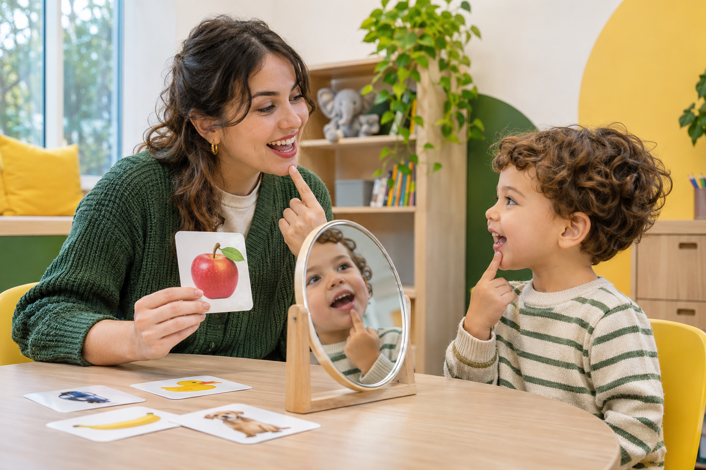
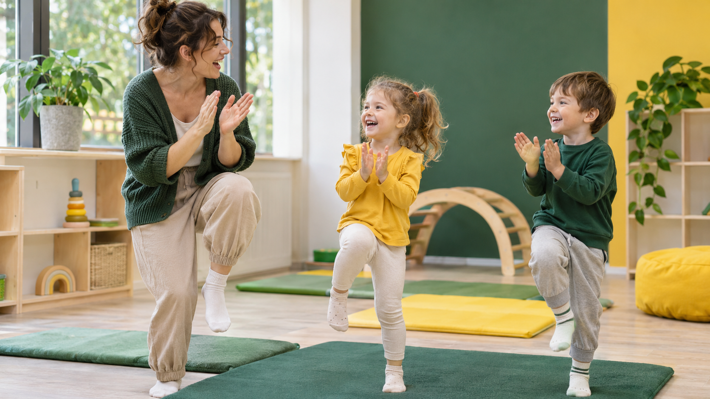
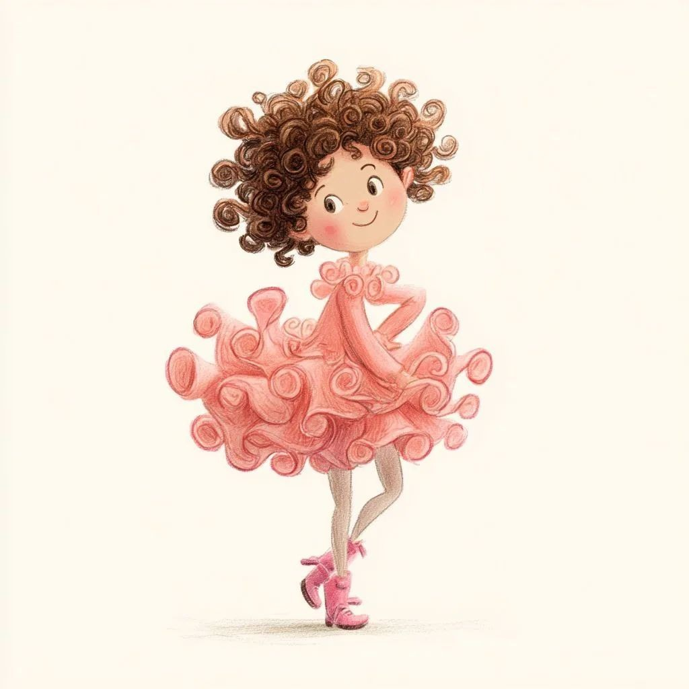
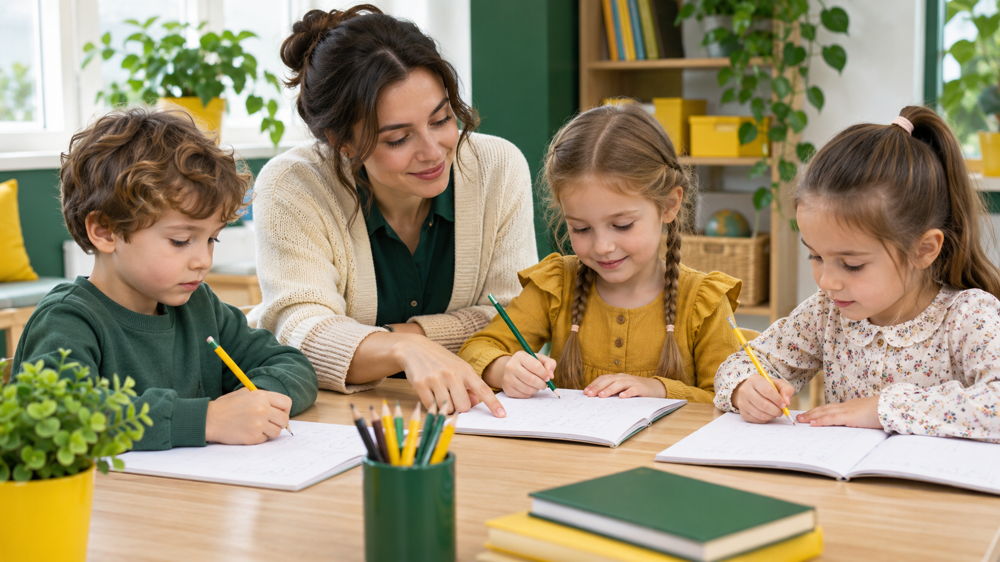
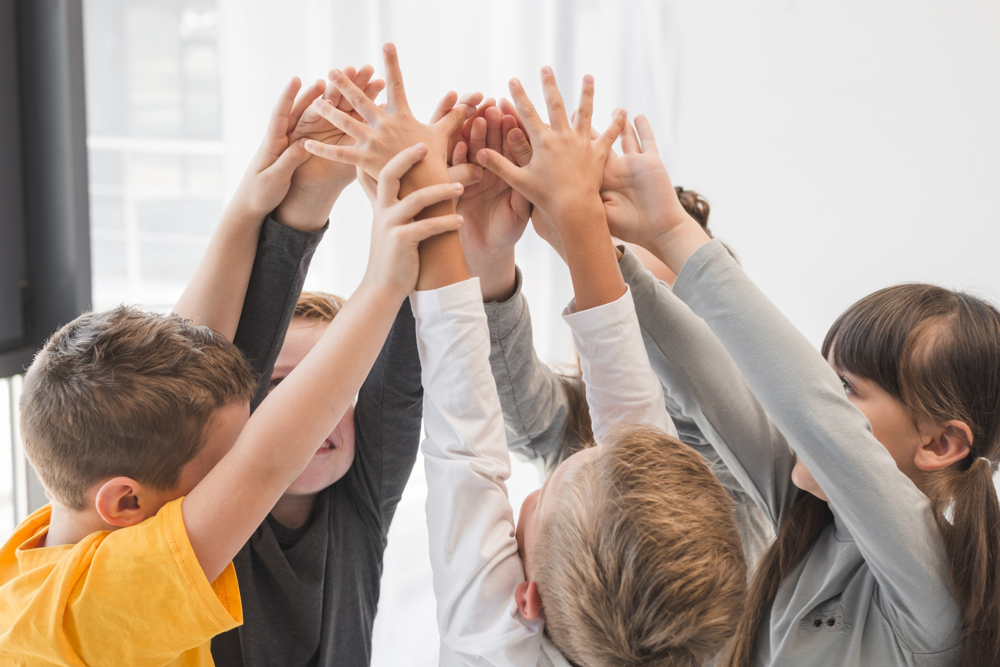
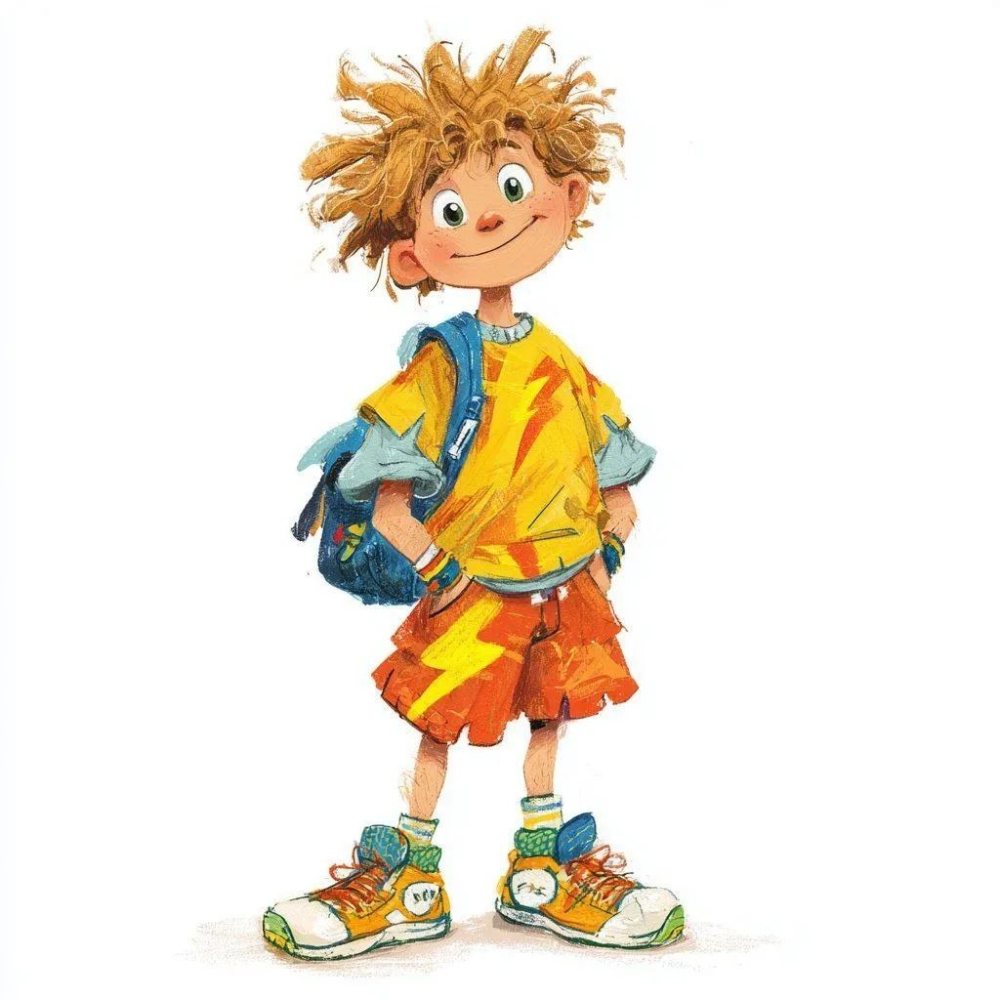
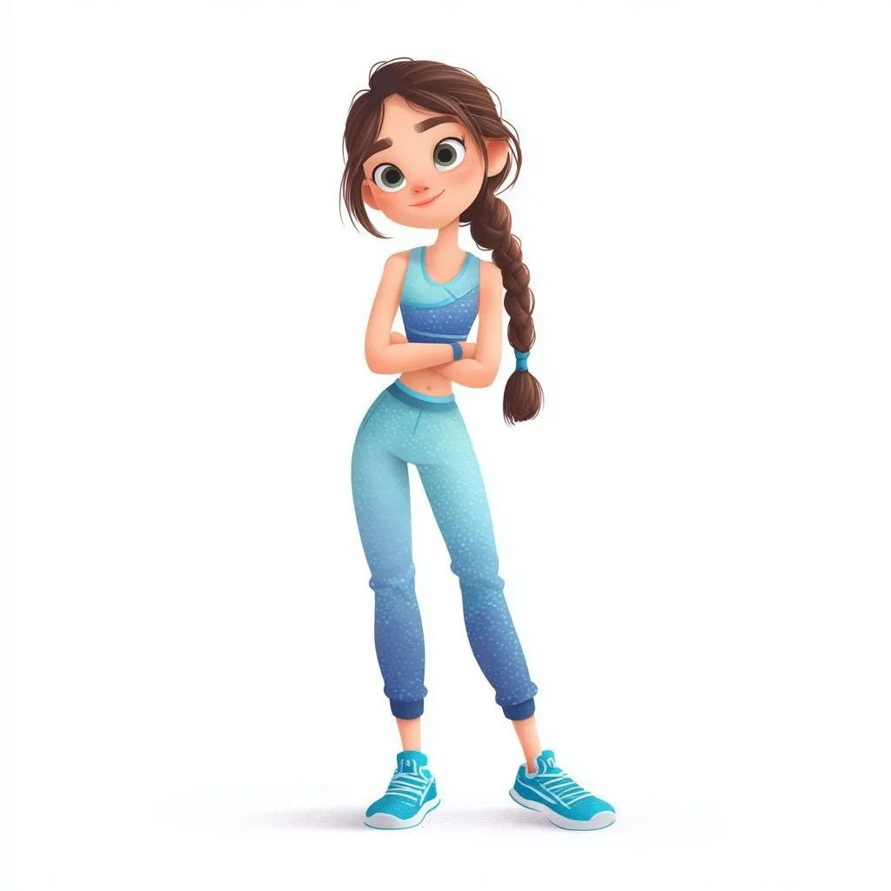

Идёт запись
от 2 лет · индивидуально
Логопедия
Запуск речи, звукопроизношение, развитие речи, трудности письма и чтения.
Москва · Текстильщики — Кузьминки
Помогаем развивать речь, уверенно читать и писать, подготовиться к школе и найти комфортный ритм обучения.
Программы по возрасту
Никакого сложного подбора: выберите возраст и перейдите к подходящим занятиям.
Подходящие программы
Нажмите на возраст выше — здесь появятся только подходящие варианты.
Индивидуальный формат с учётом запроса семьи.

от 2 лет · индивидуально
Запуск речи, звукопроизношение, развитие речи, трудности письма и чтения.
Занятия в игровом ритме с двумя специалистами.

3,5–4 года · 2 раза в неделю
Логоритмика с логопедом и тренером по двигательному развитию.
Две программы для уверенного старта.

4–5 лет · 1 раз в неделю
Постановка руки и первые уверенные линии через игру.

4–5 лет · 2 раза в неделю
Речь, логика, внимание, память и первые шаги в математике и грамоте.
Учимся понимать задания и работать самостоятельно.
5–6 лет · вечер или суббота
Учимся слышать задание, формулировать мысли, читать, считать и работать в тетради.
Мини-классы для детей младшего школьного возраста.

1–4 класс · мини-класс 6–8 детей
Комфортный темп, общение и помогающие специалисты без требования ПМПК.
Герои курса для 4–5 лет
Три персонажа помогают ребёнку осваивать линии через игру — без скучных прописей.
«Научу тебя аккуратности, и твои пальчики станут послушными»

«Со мной твои линии станут чёткими и ровными»

«Перейдём от хаотичных каляк к уверенным линиям»
Как мы работаем
Ребёнок может идти к результату с другой скоростью, в своём ритме и объёме. Мы видим не ярлык, а человека — с диагнозом или без.
Разбираемся в ситуации семьи и смотрим, что будет полезно именно сейчас.
Подбираем формат, нагрузку и специалистов без лишних занятий.
Объясняем родителю, что происходит, и замечаем реальные изменения.
Семейные классы · 1–4 класс
Мини-классы по 6–8 человек для детей, которым некомфортно в шумном классе. Свой темп, друзья и специалисты рядом.
Ближайшие наборы
Позвоните или напишите администратору — уточним актуальное расписание и наличие мест.
Вопросы родителей
Не нашли ответ? Позвоните — расскажем без сложных терминов.
+7 985 637-97-72Мы работаем с детьми примерно от 2 до 11–12 лет. Для малышей чаще начинаем с диагностики или консультации, затем предлагаем подходящий формат.
Для обращения в центр заключение не требуется. В семейных классах ребёнок может получать помощь специалистов без ПМПК.
Администратор уточняет ваш запрос, возраст ребёнка и удобное время. Формат диагностики и её стоимость зависят от направления — всё объясним заранее.
Размер зависит от программы. В семейных классах — 6–8 детей, в «Домашке» — не более 6. По другим группам администратор сообщит актуальный состав.
Для части программ действует абонемент. Условия пропусков, переносов и актуальная стоимость подтверждаются перед записью.
Контакты
Метро «Текстильщики» и «Кузьминки» · ЮВАО
Связаться напрямую
Позвоните или напишите — администратор поможет выбрать программу.
Позвонить+7 985 637-97-72 Перейти в Telegram-канал